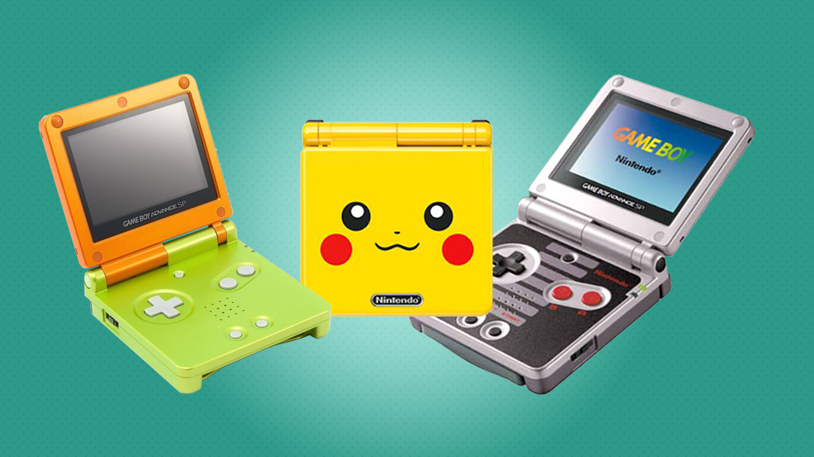
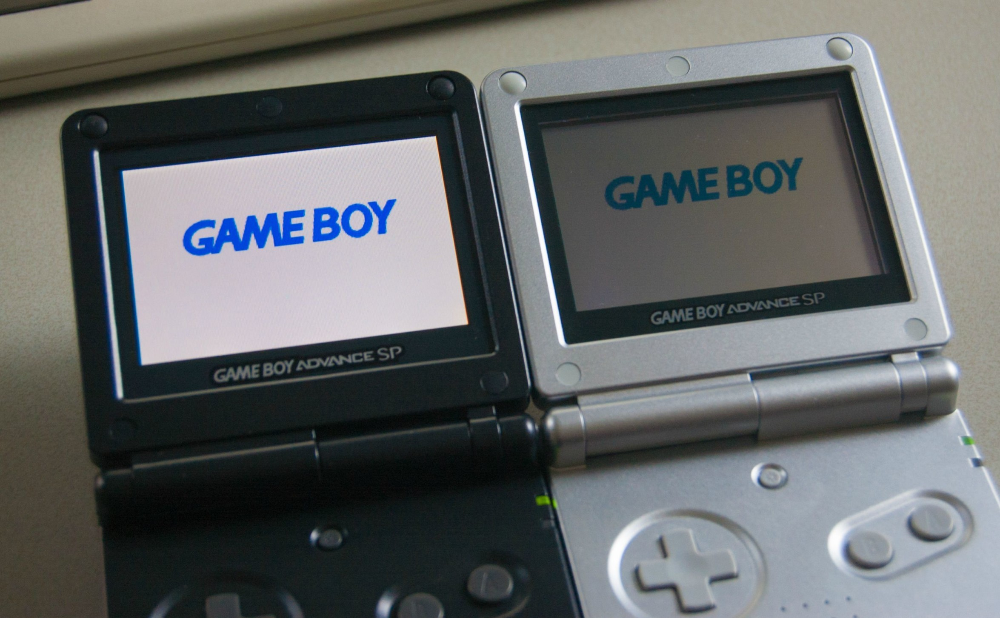
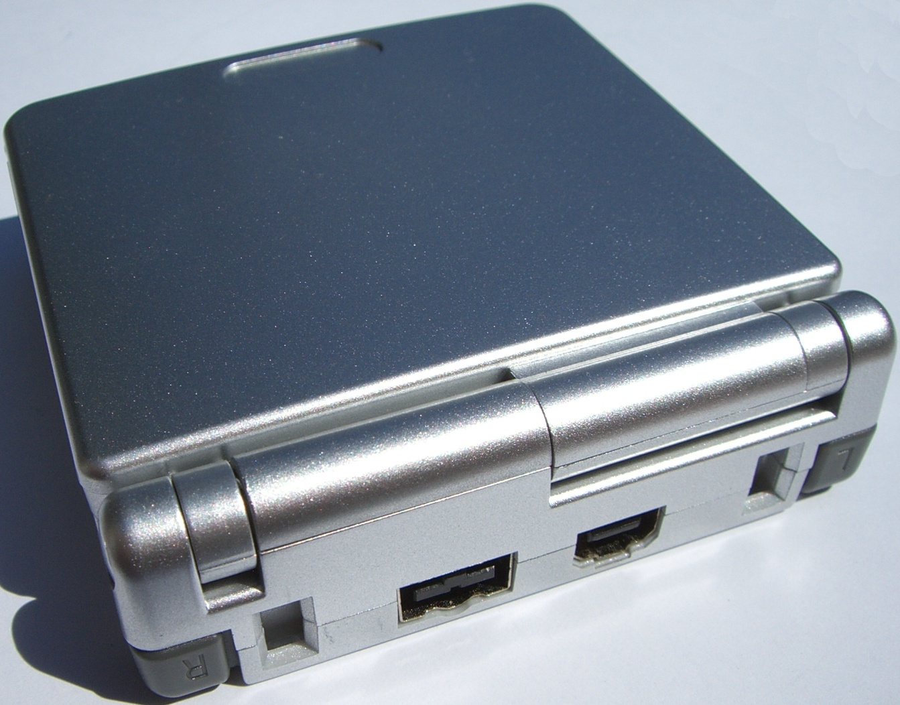

The Game Boy Advance SP was released in February 2003
The Game Boy Advance SP is a big step for Nintendo. Not only did it generally improve upon the GBA design with a more compact and portable case, but also solved one of the biggest and longest standing problems with Nintendo's portables: a dark LCD. And although the frontlight is one of the most practical improvements for the system, that's hardly where the innovation stops.

many differnt colors and designs
he Game Boy Advance SP is an updated version of the Game Boy Advance, released in 2003 featuring a front-lit screen and a clamshell design similar to the Nintendo DS. It was later re-released in September 2005 with a brighter, back-lit screen. The updated version is the third Nintendo handheld to have a back-lit screen, after the Nintendo DS in 2004, and the Game Boy Light in 1998.

The most notable feature is the front-lit screen, The Game Boy Advance SP is also the first handheld system to have a clamshell design and a rechargeable battery

there is a slider for the volume. On the right side of the console is the power switch, and the power and charging lights. On the top are ports for charging and accessories (like the link cable). The back covers the battery, and contains the serial number. Inside, there is a floating directional pad, two face buttons (A and B), Start and Select buttons, as well as a brightness button, the speaker, and the lights. On the top, there is also two shoulder buttons (L and R).
nostalgic piece from all out child hoods and maybe even first gaming technology owned, surpisingly still around these days and being sold in gamestops linked below!